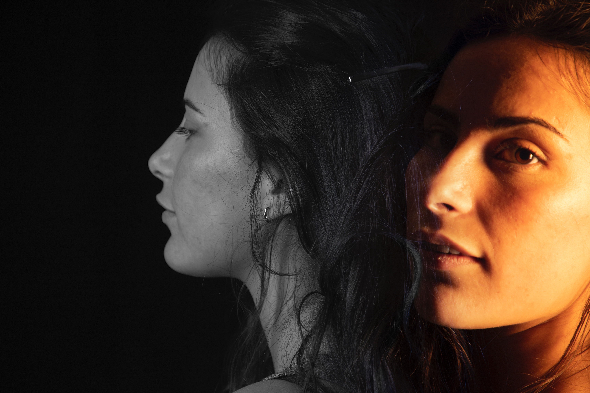

Este proyecto fotográfico fue desarrollado en una clase práctica de fotografía en la universidad, donde el objetivo era capturar el movimiento humano desde una perspectiva creativa y expresiva. A través de una serie de tomas controladas y el uso de largas exposiciones, conseguimos representar el flujo del cuerpo en movimiento, generando imágenes cargadas de dinamismo y ritmo visual.
Además del trabajo en cámara, cada fotografía fue editada cuidadosamente para resaltar la fluidez del movimiento y mejorar la estética final. Mediante superposiciones, ajustes de color y contraste, logramos transmitir una sensación de continuidad, como si la imagen respirara. Estas composiciones no solo documentan un instante, sino que expresan un estado emocional, una transición o una idea de identidad en transformación. El resultado es una serie de imágenes que equilibran técnica, expresión y sensibilidad visual, reflejando el potencial narrativo de la fotografía cuando se combina con intención artística.